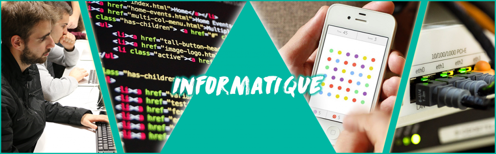

DUT TC 1ère année : Découvrir le fonctionnement du commercial en entreprise, appréhender et se confronter aux problèmes de la relation avec le client.
DUT TC 2ème année : Mise en oeuvre des méthodes commerciales au niveau Bac+2
LP Commercialisation de Produits et Services : Mise en oeuvre des méthodes commerciales au niveau Bac+3
Études de gestion
DUT GEA 1ère année : découverte de l’entreprise
DUT GEA 2ème année :
Option petites et moyennes organisations : Gestion et optimisation des coûts dans le secteur du transport La relation clientèle dans les PMO (imprimerie du centre)
Option Finances et comptabilité : Les recettes et la facturation au Conseil Général La comptabilité des BNC
Option ressources humaines : La sécurité et la GRH La mise en place du Plan de formation
Études d'informatique
DUT info 2ème année : réalisation de site Web, développement d’une base de données, analyse d’un projet informatique
LP Métiers de l’informatique : administration et sécurité des systèmes et des réseaux : Sécurité Informatique, Système d’information, Développement, Développement Web, Développement orienté maintenance, Mise en place de nouvelles technologies, Réseau (supervision, maintenance, gestion)

Études medias numériques
DUT MMI 1ère année : analyse de la communication interne/externe
DUT MMI 2ème année : réalisation de supports de communication, web design, post-production…
Objectifs des stages
Le stage fait partie intégrante de nos formations. Il est l’occasion d’une mise en situation professionnelle. Le contenu de la mission et sa durée dépendent des diplômes. Entreprises, collectivités locales et territoriales, administrations,etc. s’impliquent ainsi chaque année dans la formation des étudiants de l’IUT. Les stages permettent aux étudiants de découvrir le monde professionnel, ils mettent en pratique leurs connaissances et ainsi d'acquérir une expérience professionnelle. Ils constituent un moyen de pré-recruter des candidats en les observant à leur futur poste. Un stage à l'étranger, c’est avant tout une opportunité unique d’inscrire sur votre parcours professionnel une expérience internationale ainsi que de développer vos compétences linguistiques, tout en découvrant le secteur d’activité qui vous intéresse d’une manière différente.
Un stage permet:
De sortir de votre zone de confort :
Partir à l'étranger est l'occasion unique de repartir à zéro et de découvrir l'inconnu complet. Nouveaux amis, nouveau cadre de vie, nouvelle culture ... Difficile de faire mieux si vous souhaitez essayer quelque chose de complètement nouveau !
De valoriser une expérience à l'étranger :
Les recruteurs ont besoin de jeunes prêt à évoluer sur un marché internationale, près à être mobile à tout moment. Une première expérience à l'étranger est clairement un message positif que vous leur envoyez dans ce sens.
Un perfectionnement de votre niveau de langue :
Améliorez votre niveau de langue et découvrez le vocabulaire propre à certains secteurs d'activité. On parle bien ici de perfectionnement, car les recruteurs ne recherchent que très peu les étudiants parlant approximativement la langue pratiquée dans l'environnement de travail.
De découvrir le pays :
Si vous travaillez la semaine, vous serez surement disponible les week-ends. C'est une excellent occasion de voyager et de participer à des activités pour rencontrer des jeunes et découvrir des choses inédites.
Un gain de maturité :
Partir en stage à l'étranger signifie pour certains quitter le cocon familial pour la première fois. Une excellente occasion d'apprendre à vivre seul et de se familiariser aux contraintes.
Comment obtenir un stage ?
Offre de stage :
Certaines entreprises peuvent contacter directement les étudiants afin de leur proposer un stage au sein de leur secteur d'activité.
Convention de stage :
Pour obtenir une convention de stage : L’étudiant adresse une demande de convention, via la fiche contact, à son responsable pédagogique et au service des stages, pour validation des modalités et contenu des missions.
Après validation, une convention de stage en trois exemplaires vous sera envoyée pour signature.
La convention est la garantie obligatoire du statut de stagiaire en entreprise et de couverture en cas d’accident du travail. A la fin du stage, le responsable du stage en entreprise est invité à formuler une appréciation sur la qualité du stage. Rappel : Tout stage commencé sans accord préalable et établissement de la convention, ne peut être entériné par l’IUT.